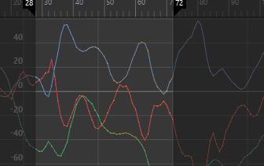
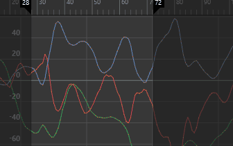
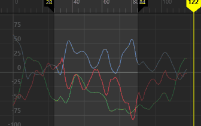

- 在“曲线图编辑器”(Graph Editor)的“曲线”(Curves)菜单中，选择“平滑过滤器(Butterworth)”(Smooth Filter (Butterworth)) >

注： 先前版本 Maya 将此过滤器称为“Butterworth 过滤器”(Butterworth Filter)。为明确起见，已将其重命名为“平滑过滤器(Butterworth)”(Smooth Filter (Butterworth))。
“平滑过滤器(Butterworth)”(Smooth Filter (Butterworth))使用智能低通平滑来平均关键帧。它是一种频率过滤器，适用于受噪波影响的曲线。
“平滑过滤器(Butterworth)”(Smooth Filter (Butterworth))可从数据中去除噪波，而不会影响曲线的最小值或最大值。通过这种方式，“平滑过滤器(Butterworth)”(Smooth Filter (Butterworth))可避免在过滤运动捕捉数据时可能发生的“过平均”问题。
注： 若要还原过滤器默认设置，请单击“过滤器”(Filter)窗口中的。
- 时间范围(Time Range)
-
指定简化曲线的时间范围。
-
- 全部(All)
-
简化整个时间范围的曲线。
- 选择(Selection)
-
使您可以选择曲线的一部分，以便可以将过滤器应用于限定区域，而不是影响整个曲线。按住 Ctrl 键可一次选择多个区域。
- 时间滑块(Time Slider)
-
简化由时间滑块的“播放开始”(Playback Start)和“播放结束”(Playback End)时间定义的时间范围内的曲线。
- 开始(Start)/结束(End)
-
指定的时间范围（开始时间/结束时间）内的所有关键帧均会简化。
-
- 开始时间(Start Time)
-
指定时间范围的开始。仅当启用“开始/结束”(Start/End)时，该选项才可用。
- 结束时间(End Time)
-
指定时间范围的结束。仅当启用“开始/结束”(Start/End)时，该选项才可用。
- 预览(Preview)
- 使您可以在应用之前直观地看到曲线上的效果。默认情况下，此选项处于启用状态。

- 中止频率(Cutoff Frequency)
- 使您可以限制过滤效果的强度，从而过滤掉高频噪波。
- 采样率(Sampling Rate)
- 使您可以设置按此速率重新采样的关键帧的密度。
- 将关键帧保持在帧上(Keep Keys on Frame)
- 使您可以将关键帧与帧速率保持一致。
- 按切线保留关键帧(Preserve Keys by Tangent)
- 使您可以将选定的切线类型从过滤中排除。